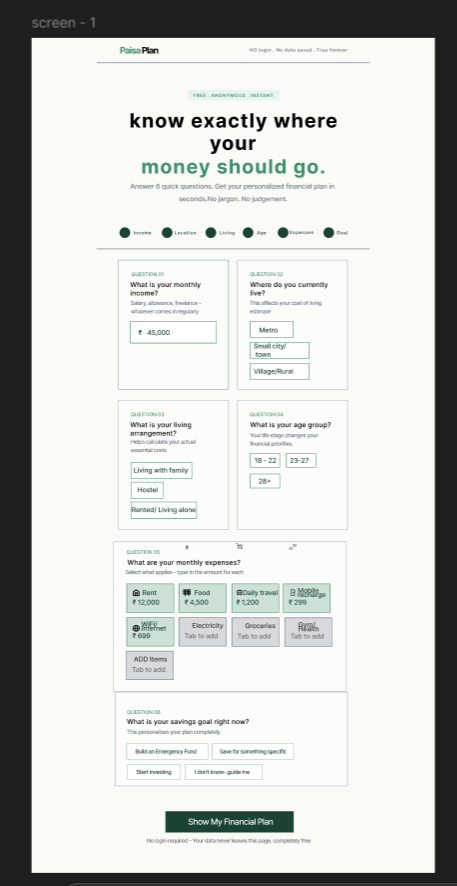
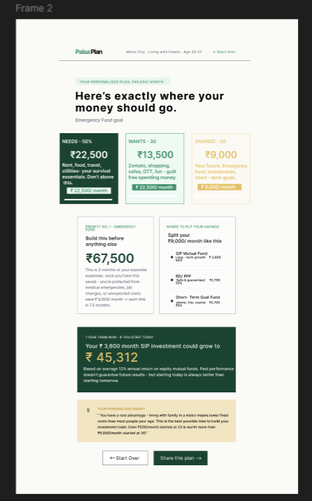
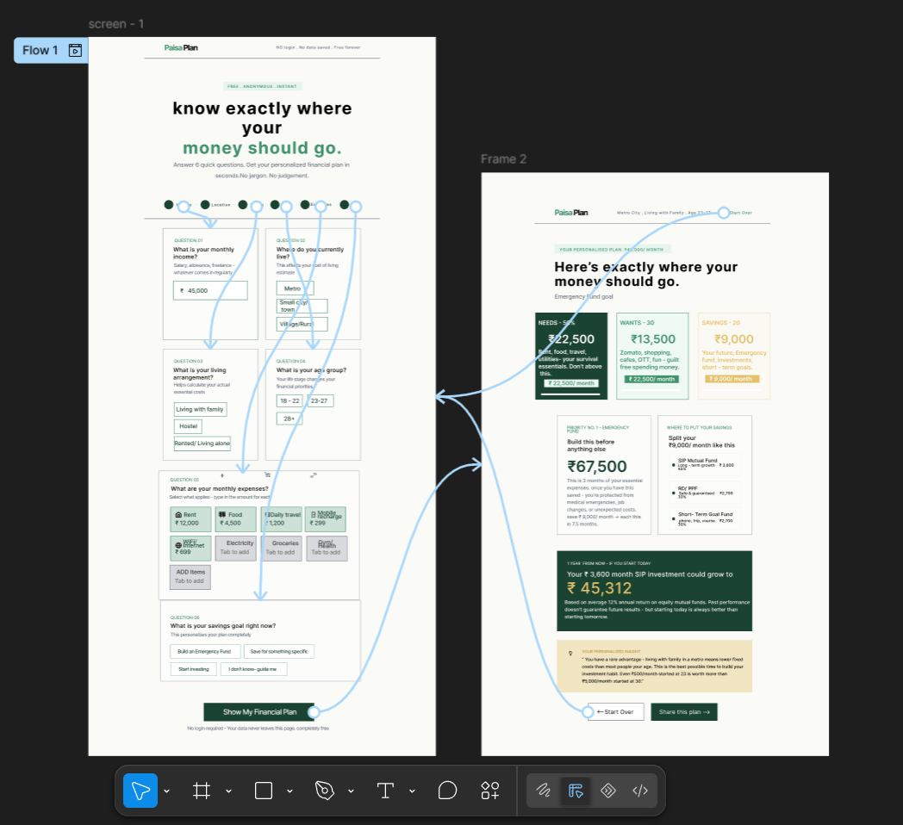

01. The Problem
Most financial tools assume you already understand money.
A 22-year-old opening a traditional banking or salary app feels confused, judged, or completely lost. Most fintech tools demand upfront personal data, throw jargon-heavy investment options at beginners, or require mandatory user accounts before offering any value.
Nobody built something calm, simple, and honest for someone receiving their very first paycheck. So I did.
02. The Solution & Mechanics
6 Questions → 1 Personalized Financial Plan
PaisaPlan guides users through six straightforward, friction-free inputs: income, city, living situation, expenses, age group, and current savings goal. In return, it generates a transparent 5-part plan:
1. Needs / Wants / Savings Split
Calculates exact rupee amounts (₹22,500, ₹13,500, ₹9,000) rather than raw percentages.
2. Emergency Fund Target
Defines the first essential safety net number (₹67,500) before risky investing begins.
3. Investment Breakdown
Splits monthly savings across three simple buckets: SIP Mutual Funds, RD/PPF, and short-term goals.
4. 1-Year Growth Projection
Shows visually what a monthly ₹3,600 SIP becomes in 12 months (₹45,312).
03. UI Architecture & Screens
Side-by-Side Screen Deep Dive


04. Prototype & Journey Map
Interactive Logic & Flow Map

05. Design Reflection
Sequencing Information Over Over-Simplification
First the split → then the safety net → where to invest → what it becomes. One step at a time.